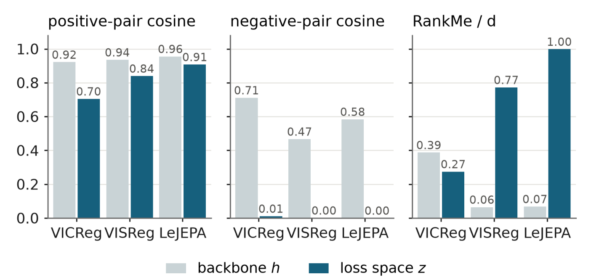
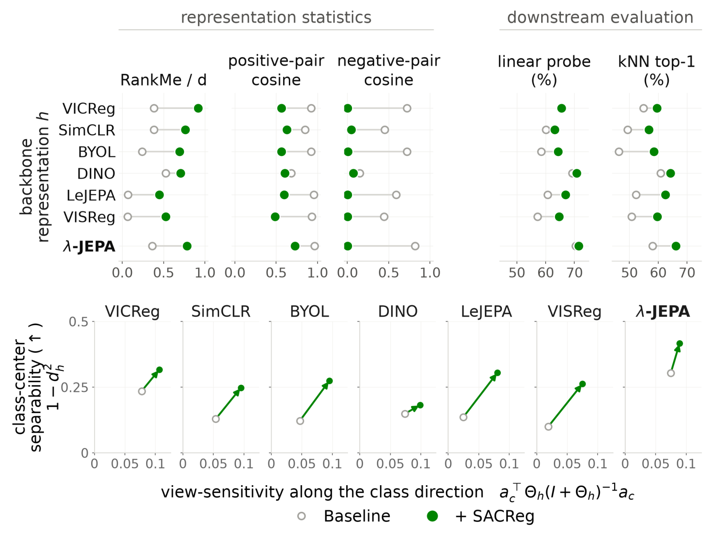

Joint-embedding methods prevent collapse where their loss is computed, after the projector. Downstream tasks use the backbone instead, and its representation can still collapse onto a few directions. So we regularize the backbone features directly, with SACReg. Its form matters as much as its placement: a log-determinant on the feature covariance, motivated by layer balance in linear networks, punishes every vanishing direction. Built on this regularizer, λ-JEPA performs strongly on ImageNet and video benchmarks.
A healthy projector, a collapsed backbone
Joint-embedding self-supervised learning (JE-SSL) trains two augmented views of an image to agree, and needs something to stop every image from landing on the same point. Explicitly regularized methods such as VICReg, LeJEPA, and VISReg impose that anti-collapse constraint on the projected representation \(z\), the output of a small nonlinear head. After pretraining the head is thrown away, and downstream tasks use the backbone representation \(h\) that feeds it.
Measured in both spaces, the two can look like different models. After the projector, different images are close to orthogonal; in the backbone, they stay quite similar to each other. RankMe, which measures how evenly variance is spread across feature directions, tells the same story: for LeJEPA, normalized by dimension, it is 1.00 after the projector and 0.07 in the backbone. The anti-collapse objective does its job in the space it acts on, while the space that is actually deployed has collapsed onto a handful of directions.

Nothing about this is paradoxical: a nonlinear head can spread out a representation that is itself low-rank. If \(h = (X, 0)^\top\) with \(X\) uniform on \(\{-1, 0, 1\}\), then \(\mathrm{Cov}(h)\) has rank one, while the projection \(p(h) = (h_1, |h_1|)^\top\) has covariance \(\mathrm{diag}(2/3, 2/9)\), which is full rank.
It matters because of what a representation is for. A good one should be task-agnostic, keeping the information that downstream tasks need, and easily probeable, keeping it readable with a simple probe (the research page has a small sketch of both). Dimensional collapse works against both. A low-rank backbone offers fewer feature directions to whatever task comes next, different tasks can rely on different directions, and what is squeezed into a vanishing direction is either lost or too faint for a linear probe to pick up. Effective rank has also been shown to predict downstream performance in JE-SSL (Garrido et al., 2023).
Backbone representations
- image (view average)
- augmented views
Singular value spectrum
- backbone h
- projector z
Regularize the backbone directly
The fix is to put a spectral anti-collapse term on the representation that is kept. For a batch of \(B\) images with \(V\) augmented views each, we average the backbone outputs over views to get image centers \(\bar h_i\), and regularize the batch of centers \(\bar H\). Averaging first means the regularizer spreads out different images, not different augmentations of the same image. For a batch of centers \(R\) with mean \(\mu_R\) and covariance \(\Sigma_R\),
The mean term centers the representation, the trace bounds its total variance, and the negative log-determinant penalizes directions whose variance vanishes, which is exactly what a collapsed backbone has. For \(\varepsilon = 0\) it is the KL divergence from \(\mathcal{N}(\mu_R, \Sigma_R)\) to \(\mathcal{N}(0, I)\). λ-JEPA adds this penalty twice to a plain invariance loss (the mean squared distance between projected views, with no negatives): once on backbone centers \(\bar H\) and once on projected centers \(\bar Z\). Added to an existing method, SACReg contributes only the backbone term and leaves the original objective untouched.
Both the form and the placement come from linear networks, which is where the λ in the name comes from. In a two-layer linear network, the layer balance λ compares the scale of the encoder with that of the head. When it is negative, the encoder carries more weight than the head in every direction, so none of its directions can shrink to zero, and weight decay plus a log-determinant on the encoder drives training to such a balance from any initialization. SACReg carries that log-determinant from the encoder's weights to its representations (derivation below).
Does a healthier backbone help?
The cleanest test is to keep a method exactly as it is and add only the backbone term. We do this for six objectives on ImageNet-100 (LeJEPA, VICReg, VISReg, SimCLR, DINO, BYOL), with ViT-S/16 trained for 100 epochs and three seeds per run.

Every method responds the same way: backbone rank rises, the projected space barely changes, and kNN and linear-probe accuracy improve. The gains do not come from extra invariance. Positive pairs generally become less similar, and class centers grow more separable while sensitivity to augmentations rises as well.
Not every anti-collapse term at the backbone does this. Moving LeJEPA's own regularizer, SIGReg, onto its encoder output barely raises the rank (RankMe/d from 0.07 to 0.09) and lowers accuracy. What helps is controlling the covariance spectrum directly, which is the log-determinant's job.
λ-JEPA at scale
Pretrained from scratch on ImageNet-1k, λ-JEPA is clearly ahead of the other explicitly regularized methods, approaches DINO and iBOT on ImageNet-1k, and has the best transfer at both sizes.
| Method | Backbone | IN-1k linear | Transfer |
|---|---|---|---|
| LeJEPA | ViT-S/16 | 62.5 | 68.7 |
| DINO | ViT-S/16 | 70.0 | 75.7 |
| iBOT | ViT-S/16 | 70.9 | 75.9 |
| λ-JEPA | ViT-S/16 | 69.7 | 77.6 |
| LeJEPA | ViT-B/16 | 69.7 | 74.2 |
| DINO | ViT-B/16 | 73.9 | 78.3 |
| iBOT | ViT-B/16 | 77.0 | 80.7 |
| VISReg | ViT-B/16 | 70.3 | 76.4 |
| λ-JEPA | ViT-B/16 | 74.2 | 80.9 |
For video we change only the loss inside the LeVJEPA training pipeline. The largest gains are on Something-Something-v2, the temporal-reasoning benchmark.
| Method | IN-1k | SSv2 | K400 |
|---|---|---|---|
| VideoMAEv2 | 53.4 | 43.6 | 37.4 |
| V-JEPA 2 | 51.6 | 42.5 | 40.7 |
| LeVJEPA | 61.0 | 40.4 | 44.6 |
| λ-JEPA | 57.1 | 48.3 | 45.7 |
What's still open
SACReg currently regularizes CLS tokens computed from global views. Extending it to patch-level features and local crops is not straightforward: local views add much more augmentation-induced variation, which makes view centers noisy and, in our experiments, made training unstable. Getting this right could help dense prediction tasks. The longest image and video runs also reuse hyperparameters from shorter ones because of compute limits.
Technical details
Layer balance in linear networks
Consider a two-layer linear network \(\hat y = W_2 W_1 x\) trained with a squared loss. The end-to-end map \(M = W_2 W_1\) is linear, but how it is split across the two layers shapes the dynamics. That split is summarized by the layer-imbalance matrix
and the network is λ-balanced when \(\Delta = \lambda I\). Under plain gradient flow \(\Delta\) is conserved. A negative balance is an anti-collapse guarantee: if \(\Delta = \lambda_{\text{bal}} I\) with \(\lambda_{\text{bal}} < 0\), then \(W_1 W_1^\top \succeq -\lambda_{\text{bal}} I\), so the encoder has full row rank. If the input covariance is bounded below, \(\Sigma_x \succeq \kappa_x I\), the hidden representations inherit the bound: \(C_h = W_1 \Sigma_x W_1^\top \succeq -\kappa_x \lambda_{\text{bal}} I\).
Selecting the balance with a regularizer
Initializing a deep nonlinear network at a prescribed negative balance is not straightforward, so instead we ask for an objective that selects it. Among all factorizations of a fixed map \(M\), the minimizer of
satisfies \(W_2^\top W_2 - W_1 W_1^\top = -(\gamma/\lambda_{\text{reg}})\, I\) (Theorem 3.1). The same balance emerges dynamically. Under regularized gradient flow the task-loss terms cancel in the evolution of the imbalance, giving \(\Delta(t) + \tfrac{\gamma}{\lambda_{\text{reg}}} I = e^{-2\lambda_{\text{reg}} t/\tau}\big(\Delta(0) + \tfrac{\gamma}{\lambda_{\text{reg}}} I\big)\). Whatever the dataset and the starting point, the network converges exponentially to a \(-\gamma/\lambda_{\text{reg}}\)-balanced solution and stays there, and the ratio \(\gamma/\lambda_{\text{reg}}\) sets the lower bound on the encoder spectrum.
From weights to representations
In nonlinear networks the imbalance is no longer conserved, so we apply the same principle to the covariance of the encoder's outputs. For a minibatch of representations with mean \(\mu\) and centered covariance \(C_h\),
Its unique minimizer is \(\mu^\star = 0\) with isotropic covariance \(C_h^\star = (\gamma/\lambda_{\text{cov}} - \varepsilon)_+ I\) (Theorem 3.4). With \(\varepsilon = 0\), the log-determinant is a strict barrier against a vanishing eigenvalue, the trace against an exploding one, and the mean term against escape by drifting. For a linear encoder with whitened inputs, the covariance part reduces exactly to the encoder portion of the linear regularizer. In small ReLU networks it raises representation rank across initialization scales, and in a ViT trained with SACReg both the backbone representations and the empirical NTK move substantially away from initialization, consistent with rich learning dynamics. The JE-SSL version above is this penalty with unit weights, up to a constant, applied to view centers.
In practice
When the feature dimension exceeds the number of image centers in a batch, the covariance is rank-deficient, so the regularizer is evaluated on random orthogonal slices, redrawn at every step; at the backbone they are one third of the feature width. Loss weights are set by each term's share of the gradient pull on the backbone rather than by a sweep. Added to an existing method, the backbone term gets a fixed 6% share, without per-method tuning (DINO is the one exception).
Citation
@misc{demirel2026lambdajepa,
title={$\lambda$-JEPA: Spectral Anti-Collapse Regularization for Self-Supervised Learning},
author={Berker Demirel and Clémentine Dominé and Valentino Maiorca and Marco Fumero and Marco Mondelli and Francesco Locatello},
year={2026},
eprint={2609.35288},
archivePrefix={arXiv},
primaryClass={cs.LG},
url={https://arxiv.org/abs/2609.35288},
}